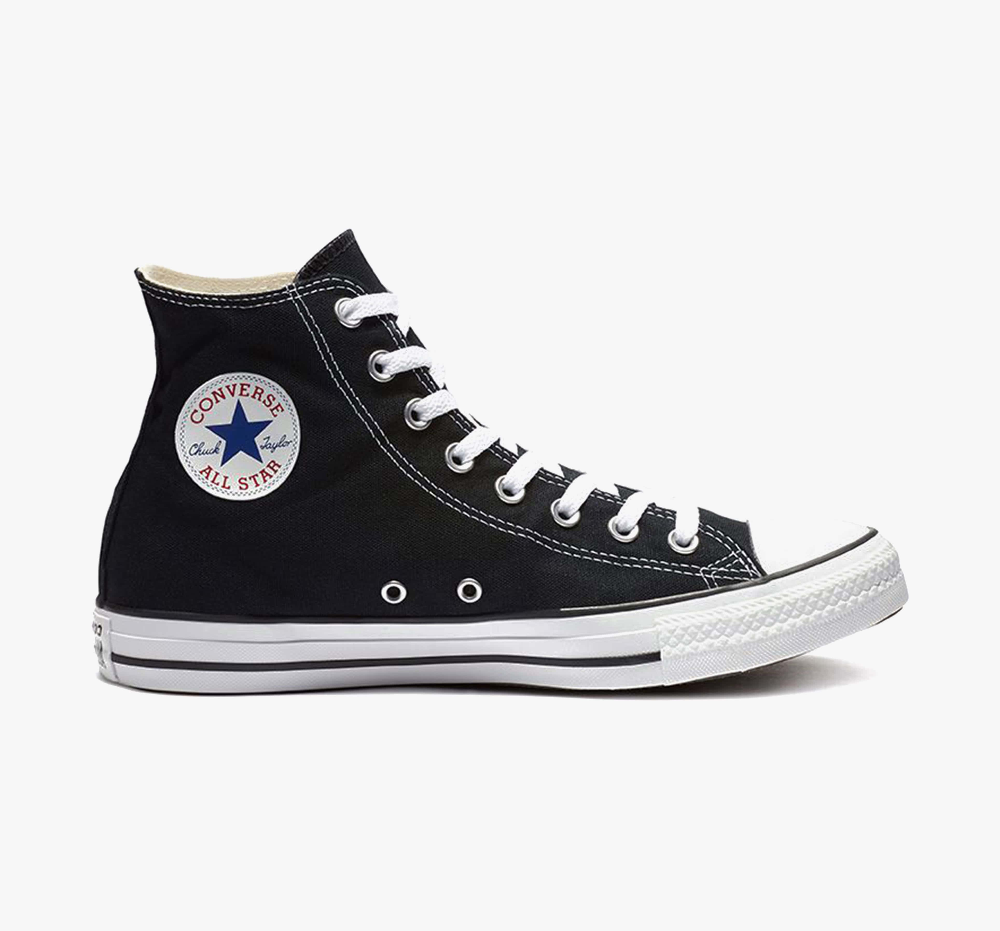
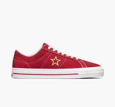
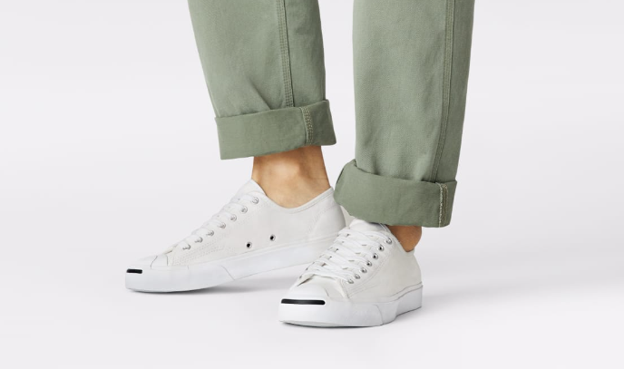

Converse adalah merek sepatu legendaris yang dikenal dengan desain klasik dan ikonik, khususnya model Chuck Taylor All Star. Didirikan pada tahun 1908 oleh Marquis Mills Converse di Malden, Massachusetts, Converse awalnya memproduksi sepatu karet sebelum beralih ke sepatu atletik. Model Chuck Taylor All Star diperkenalkan pada tahun 1917 sebagai sepatu basket, dan menjadi sangat populer setelah Chuck Taylor, seorang pemain basket dan pelatih, mengadopsinya dan memberikan saran desain untuk peningkatan. Ciri khas sepatu ini adalah sol karet, bagian atas dari kanvas, dan logo bintang di pergelangan kaki. Selain Chuck Taylor All Star, Converse juga memproduksi berbagai model populer lainnya seperti Jack Purcell dan One Star. Sepatu-sepatu ini dikenal dengan gaya sederhana namun stylish, dan telah menjadi simbol budaya pop yang digunakan oleh berbagai subkultur, termasuk skaters, musisi, dan penggemar fashion. Converse sering berkolaborasi dengan desainer, seniman, dan merek terkenal untuk menciptakan edisi terbatas yang unik dan kolektibel. Sebagai bagian dari Nike, Inc. sejak tahun 2003, Converse terus mempertahankan warisan klasiknya sambil berinovasi dengan desain dan teknologi baru. Dengan sejarah lebih dari satu abad, Converse tetap relevan dan digemari di seluruh dunia, melambangkan gaya yang timeless dan semangat independen.
| Image | Model | Description |
|---|---|---|
|  | Converse Chuck Taylor All Star | Converse Chuck Taylor All Star adalah model ikonik dari Converse yang pertama kali diperkenalkan pada tahun 1917. Sepatu ini terkenal dengan desain kanvas klasiknya dan sol karet yang tahan lama. Bagian atas sepatu terbuat dari bahan kanvas yang kuat, memiliki lubang ventilasi di sisi dalam untuk sirkulasi udara, dan tersedia dalam berbagai warna dan pola. Chuck Taylor All Star adalah pilihan favorit bagi banyak orang karena kenyamanannya dan tampilannya yang klasik serta serbaguna, cocok untuk berbagai kesempatan. |
|  | Converse One Star | Converse One Star awalnya diluncurkan pada tahun 1974 dan dikenal dengan logo bintang tunggal yang khas di sisi sepatu. Sepatu ini awalnya didesain untuk bermain basket, tetapi kemudian menjadi populer di kalangan skateboarder dan subkultur lainnya. One Star memiliki desain yang lebih simpel dibandingkan dengan Chuck Taylor, dengan konstruksi kulit atau suede yang tahan lama dan sol karet yang memberikan traksi yang baik. Sepatu ini juga sering digunakan sebagai simbol gaya hidup yang santai dan trendi. |
|  | Converse Jack Purcell | Converse Jack Purcell pertama kali dirilis pada tahun 1935 sebagai sepatu khusus untuk bermain badminton. Sepatu ini dikenal dengan "senyum" kecil di bagian depan solnya. Desainnya yang minimalis dan elegan membuatnya tetap populer hingga kini. Jack Purcell terbuat dari bahan kanvas atau kulit berkualitas tinggi dengan sol karet yang nyaman dan tahan lama. Sepatu ini sering dipilih oleh mereka yang mencari kombinasi antara gaya kasual dan sedikit sentuhan klasik. |
| Converse Cons | Converse Cons adalah lini yang dikhususkan untuk skateboard. Sepatu ini dirancang untuk memberikan kenyamanan dan daya tahan yang diperlukan bagi skateboarder. Beberapa model populer dalam lini ini termasuk Cons One Star Pro, Cons CTAS Pro, dan Cons Louie Lopez Pro. Setiap model dilengkapi dengan fitur-fitur seperti sol karet yang memberikan traksi ekstra, lapisan tambahan pada bagian atas untuk ketahanan, dan bantalan yang lebih baik untuk melindungi kaki dari benturan. |